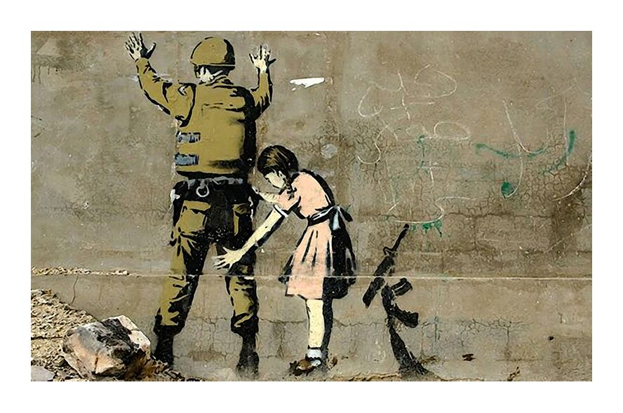
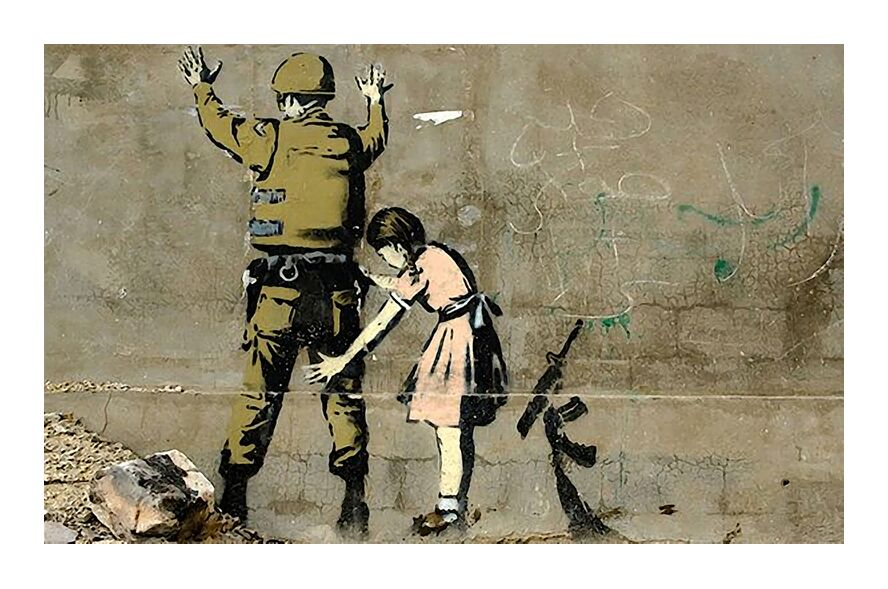
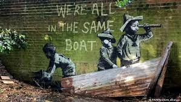
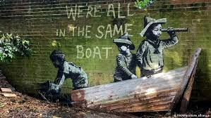

BANSKY
BIOGRAFÍA
Banksy es el seudónimo de un artista británico llamado Robbie Banks,1 que posiblemente haya nacido en el entorno de Bristol a mediados de la década de 1970. Participó en el documental Salida por la tienda de regalos, pero se desconocen otros detalles de su biografía. Según un estudio de la Universidad Queen Mary de Londres, publicado en marzo de 2016, Banksy podría ser un hombre llamado Robin Cunningham.2 También se ha especulado que Banksy sea el suizo Maître de Casson.3 Maître de Casson lo niega en su sitio web.
Nacido en 1973 o 1974, creció en Bristol. Se vio implicado en el grafiti durante el boom del aerosol de esta ciudad a finales de los 80. Su trabajo, en su gran mayoría piezas satíricas sobre política, cultura pop, moralidad y etnias, combina la escritura con grafitis, estarcidos y plantillas. Su técnica de estarcido es similar a la de Blek le Rat y a la de los miembros de la banda de anarco-punk Crass. Banksy reconoció la influencia de Blek le Rat, diciendo: "Cada vez que creo que he pintado algo ligeramente original, me doy cuenta de que Blek le Rat lo hizo mejor, solo que un año antes".5 Sus obras se han hecho populares al ser visibles en varias ciudades del mundo, especialmente en Londres.
OBRA PICTÓRICA
 

 
